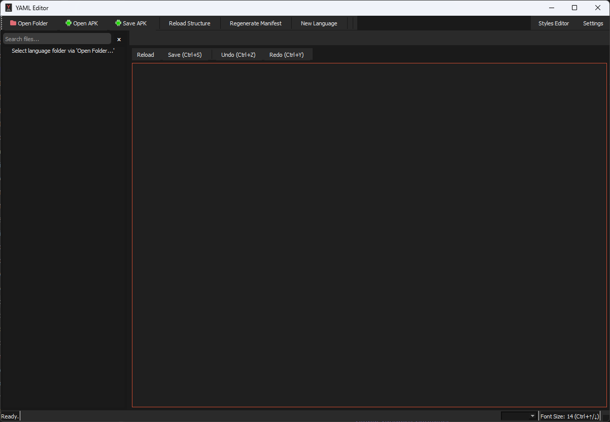
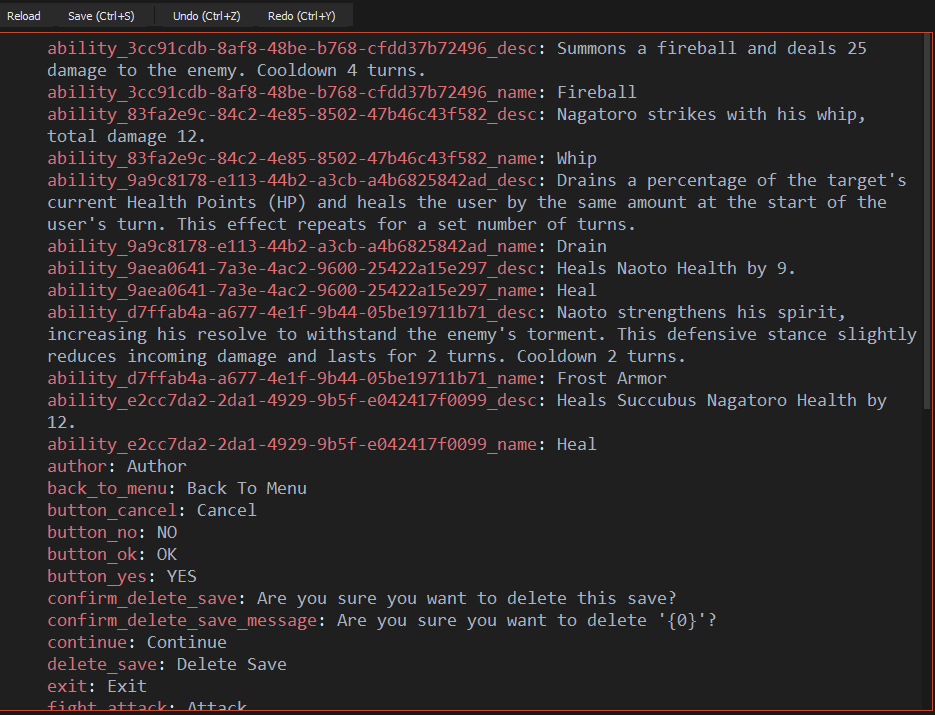

A specialized editor for working with YAML localization files in SNEngine projects. Provides syntax highlighting, validation, and editing tools specifically designed for managing localization content in SNEngine visual novel games.


For YAML files with customizable colors
For SNEngine-specific YAML structures
With language switching capabilities
Tree view navigation for localization projects
For editing localization files in mobile games
Automated creation of language manifests
Create new languages from templates
Validation and error detection
The SNEngine YAML Editor simplifies the process of creating and managing YAML localization files for visual novels built with the SNEngine framework. It's specifically designed to handle multi-language localization projects where each language has its own folder with YAML files containing translated content.
The editor provides tools for translators and developers to efficiently work with localization data, with special support for mobile game APK files.
Localization data files for SNEngine projects
Structures with multiple language subdirectories (e.g., en/, ru/, ja/)
Containing SNEngine localization data in assets/Language/ or assets/StreamingAssets/Language/ directories